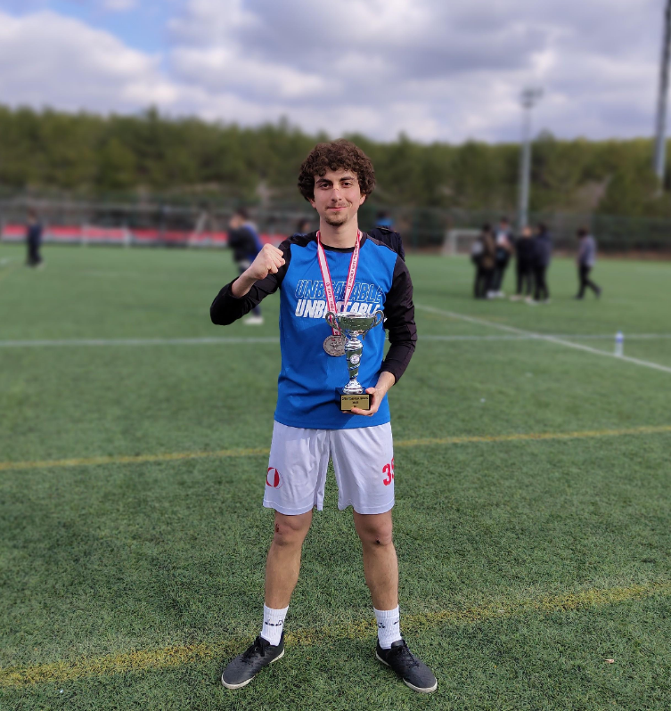
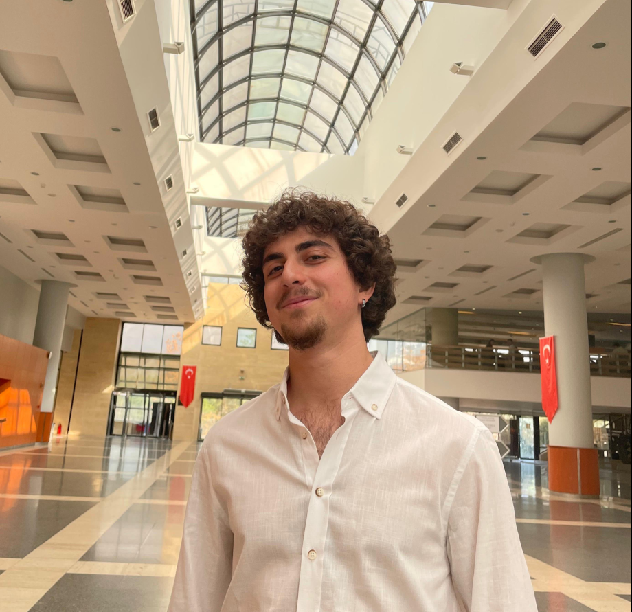

Born in Bursa. Currently a fourth-year student at ODTÜ (METU). Completed an internship at the Strategic Planning and Management Department at TÜBİTAK as an analysis and development intern. Developed software for job tracking using Java at TÜBİTAK. Served as founder and board member of the ODTÜ Artificial Intelligence Community for 3 years. Involved in several volunteering activities and communities.
A passionate athlete and explorer with a background in licensed football and water polo, who also loves tennis, running, camping, and traveling. Enthusiastic about space exploration, AI, big data, and privacy.

